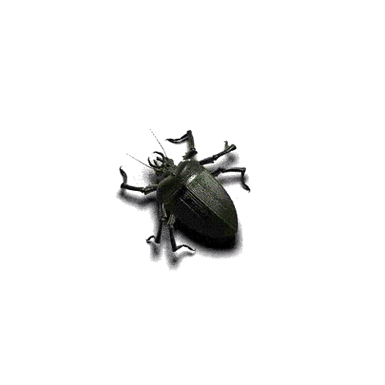

Home |
Snail Facts |
Butterfly Facts |
Cockroach Facts |
Misc. Facts
A Few more Tid bits
Flies are deaf
The blood of lobsters is blue
No two spider webs are exactly the same
Only full-grown male crickets can chirp
Insects consume 1/3 of the Earth's food crop every year.
The only good thing Trombiculidae (Chiggers) do is feast upon the eggs of mosquitoes......
Because of Louisiana's climate it supports the growth of the Red Fire Ant very well.. so much that the population has flourished beyond control in other southern states
